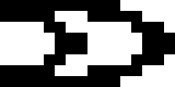
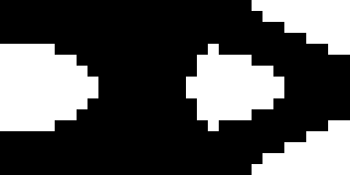
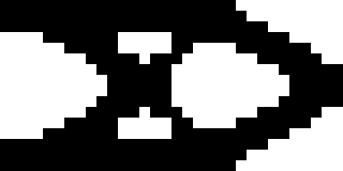
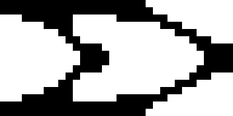
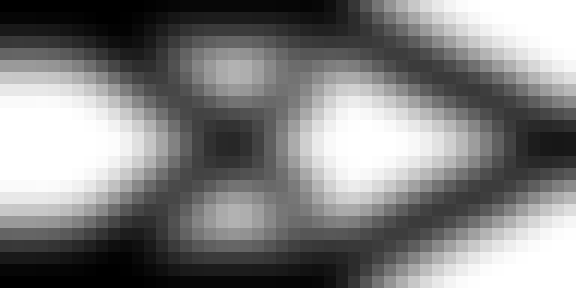
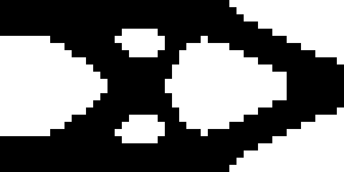
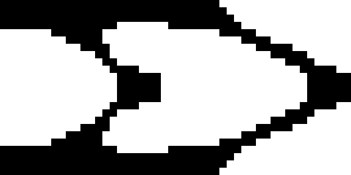
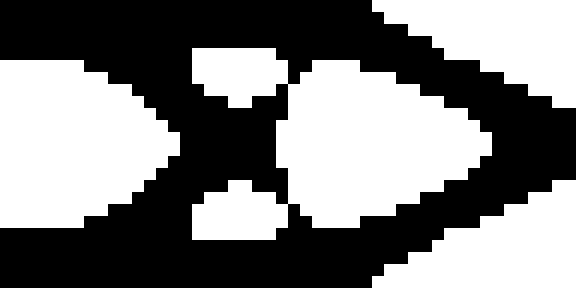

CAE VERIFICATION · MESH & BINARY DESIGN
Does the result survive mesh refinement and thresholding?
Three separate questions
Solid: reference FEM refinement. Frozen: the same coarse physical-density field, exactly subdivided without smoothing. Reoptimized: a new OC optimization on each mesh, with constant physical radius. Only the first two isolate FEM discretization effects.
| Mesh | Solid C | Frozen C | Reoptimized C | Gray fraction | OC converged |
|---|
| 8×4 | 36.528 | 84.126 | 84.126 | 31.2% | True |
| 16×8 | 37.702 | 102.125 | 104.214 | 73.4% | True |
| 32×16 | 38.097 | 116.703 | 100.995 | 69.9% | True |
| 48×24 | 38.185 | 123.023 | 101.965 | 69.1% | True |
Last refinement: frozen-field compliance changes by 5.42%; reoptimized compliance changes by 0.96%. Four levels and an update-based stopping rule do not prove mesh independence or global optimality. At 8×4 the radius is smaller than one element width: the filter is effectively inactive. Keep this coarse case as a diagnostic, not evidence of a resolved physical length scale.
8×4: binary reanalysis
Continuous densitythreshold_0.3threshold_0.5threshold_0.7volume_preserving
16×8: binary reanalysis
Continuous densitythreshold_0.3threshold_0.5threshold_0.7
volume_preserving 32×16: binary reanalysis
Continuous density
threshold_0.3
threshold_0.5
threshold_0.7volume_preserving 48×24: binary reanalysis

Continuous densitythreshold_0.3
threshold_0.5
threshold_0.7
volume_preservingBinary acceptance contract
Reanalyze physical 0/1 densities without density filtering. Require material fraction ≤50%, compliance ≤105% of the continuous result, a four-neighbour support-to-load path, converged parent optimization and <1% compliance sensitivity when void modulus changes from 10⁻⁶ to 10⁻⁸. These are demonstrator criteria, not manufacturing qualification.
Volume-preserving selection keeps the largest densities; equal values are resolved by stable element index. This can break symmetry. Low compliance obtained by adding material is not accepted. Disconnected shapes may still return finite numbers because void is represented by weak material.
Evidence: mesh results · binary results · configuration · provenance.